Voluntary Payoff Sharing
m.PayoffSharing.data <- time_series_data %>%
filter(SignalingType == 'VP') %>%
filter(State != 'mixed') %>%
mutate(
c_OwnDistFromResource = OwnDistFromResource / 40,
c_Time = Time / max(Time)
) %>%
mutate(State = case_when(State == 'tracking' ~ 'Tracking',
State == 'searching' ~ 'Searching')) %>%
mutate(State = relevel(as.factor(State), ref = "Tracking")) %>%
select(Participant, ResourceSpeed, State, IsSignaling, Time, c_Time, OwnDistFromResource,
c_OwnDistFromResource)
head(m.PayoffSharing.data)m.PayoffSharing.data %>%
group_by(Participant) %>%
summarise(payoff_sharing_probability = mean(IsSignaling), ResourceSpeed = unique(ResourceSpeed)) %>%
ggplot(aes(x=payoff_sharing_probability)) +
geom_histogram(alpha=0.5, binwidth = 0.05) +
# geom_density() +
facet_grid(cols=vars(ResourceSpeed)) +
theme_nice() +
labs(x = "Proportion of Time")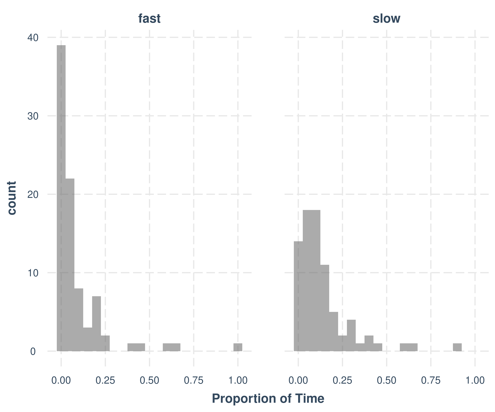
# Step 1: participant means
m.PayoffSharing.data %>%
group_by(Participant, ResourceSpeed) %>%
summarise(payoff_sharing_probability = mean(IsSignaling, na.rm = TRUE),
.groups = "drop") %>% # Step 2: grand mean and SD across participants
group_by(ResourceSpeed) %>%
summarise(
mean_probability = mean(payoff_sharing_probability),
sd_probability = sd(payoff_sharing_probability),
n = n()
)m.PayoffSharing.data %>%
filter(State == "Tracking", OwnDistFromResource < 10) %>%
group_by(Participant) %>%
summarise(payoff_sharing_probability = mean(IsSignaling), ResourceSpeed = unique(ResourceSpeed),
n = n()) %>%
filter(n > 10) %>%
ggplot(aes(x=payoff_sharing_probability)) +
geom_histogram(alpha=0.5, binwidth = 0.01) +
geom_density() +
facet_grid(cols=vars(ResourceSpeed)) +
theme_nice() +
labs(title = "Distribution of Payoff Sharing Probabilities",
subtitle = "groupped by participant",
x = "Payoff Sharing Probability (Proportion of Time)")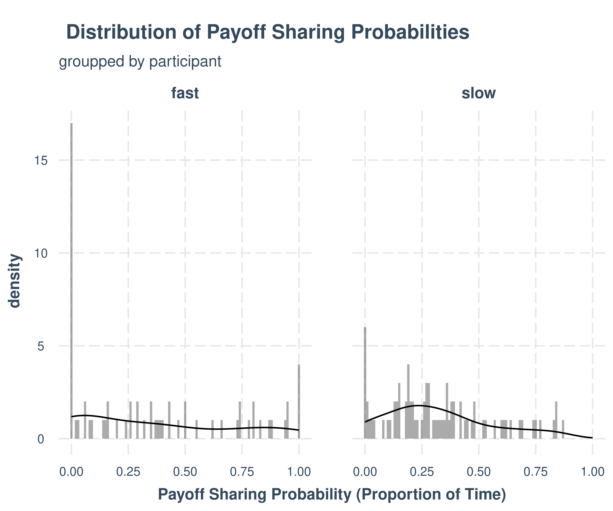
Count Model
m.PayoffSharing.SwitchCounts.formula <- brmsformula(
n_switch_0_to_1 ~ ResourceSpeed + (1 | Participant),
family = poisson()
)
m.PayoffSharing.SwitchCounts.priors <-
prior(normal(0, 0.5), class = b) +
prior(normal(0, 0.1), class = 'sd') +
prior(normal(0, 1), class = Intercept)Model fitting
m.PayoffSharing.SwitchCounts.fit <- brm(
formula = m.PayoffSharing.SwitchCounts.formula,
data = m.PayoffSharing.SwitchCounts.data,
prior = m.PayoffSharing.SwitchCounts.priors,
chains = 4,
cores = 4,
seed = 42,
iter = 2000,
file = paste0(fits_path, 'payoff_sharing_count_1.rds'),
backend = "cmdstanr",
threads = threading(100),
control = list(adapt_delta = 0.95),
save_pars = save_pars(all = TRUE)
)Model diagnostics
## Family: poisson
## Links: mu = log
## Formula: n_switch_0_to_1 ~ ResourceSpeed + (1 | Participant)
## Data: m.PayoffSharing.SwitchCounts.data (Number of observations: 165)
## Draws: 4 chains, each with iter = 2000; warmup = 1000; thin = 1;
## total post-warmup draws = 4000
##
## Multilevel Hyperparameters:
## ~Participant (Number of levels: 165)
## Estimate Est.Error l-95% CI u-95% CI Rhat Bulk_ESS Tail_ESS
## sd(Intercept) 0.76 0.04 0.68 0.85 1.00 1456 1899
##
## Regression Coefficients:
## Estimate Est.Error l-95% CI u-95% CI Rhat Bulk_ESS Tail_ESS
## Intercept 1.88 0.09 1.70 2.05 1.00 1269 2332
## ResourceSpeedslow 1.15 0.13 0.91 1.40 1.00 582 1525
##
## Draws were sampled using sample(hmc). For each parameter, Bulk_ESS
## and Tail_ESS are effective sample size measures, and Rhat is the potential
## scale reduction factor on split chains (at convergence, Rhat = 1).Condition draws
m.PayoffSharing.SwitchCounts.fit %>%
emmeans(~ ResourceSpeed, epred = TRUE, type = "response", re_formula = NA) %>%
gather_emmeans_draws() %>%
ggdist::mean_hdci(.width = 0.9) %>%
knitr::kable("html", digits = 2) %>% kable_classic(full_width = T, position = "center", )| ResourceSpeed | .value | .lower | .upper | .width | .point | .interval |
|---|---|---|---|---|---|---|
| fast | 6.58 | 5.60 | 7.59 | 0.9 | mean | hdci |
| slow | 20.88 | 17.79 | 23.96 | 0.9 | mean | hdci |
Count vs Score model
m.PayoffSharing.SwitchCounts.data %>%
ggplot(aes(x=n_switch_0_to_1, y=Score, color=ResourceSpeed)) +
facet_wrap(vars(ResourceSpeed), scales="free") +
geom_point() +
geom_smooth(method="lm")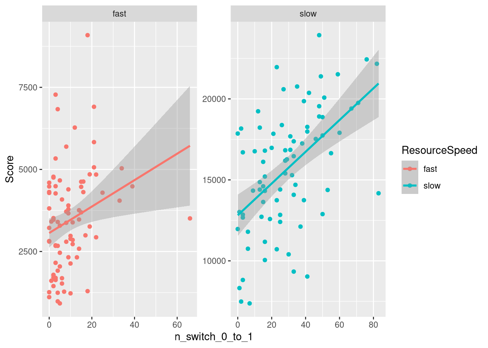
m.PayoffSharing.SwitchCounts.data %>%
group_by(Group) %>%
summarise(
Score_0_1 = mean(Score),
TrackingTime_0_1 = mean(TrackingTime_0_1),
PCR_0_1 = mean(PCR_0_1),
sum_n_switch_0_to_1 = sum(n_switch_0_to_1),
ResourceSpeed = unique(ResourceSpeed)
) %>%
mutate(sum_n_switch_0_to_1 = sum_n_switch_0_to_1 / max(sum_n_switch_0_to_1)) %>%
ggplot(aes(x=sum_n_switch_0_to_1, y=Score_0_1, color=ResourceSpeed)) +
facet_wrap(vars(ResourceSpeed), scales="free") +
geom_point() +
geom_smooth(method="lm")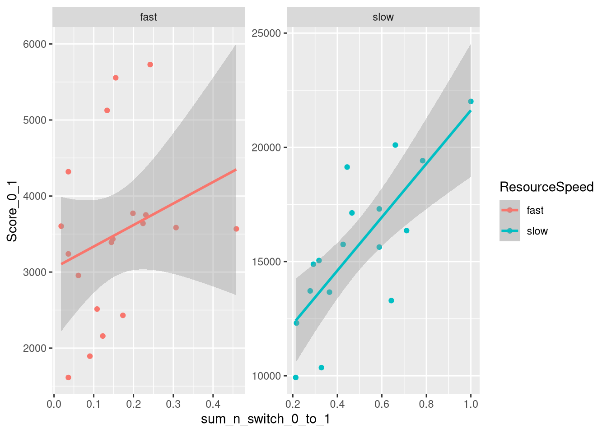
Model fitting (Participant)
m.PayoffSharing.SwitchCounts.Score.formula <- brmsformula(
Score_0_1 ~ ResourceSpeed * c_n_switch_0_to_1,
phi ~ ResourceSpeed,
family = Beta()
)
m.PayoffSharing.SwitchCounts.Score.priors <-
prior(normal(0, 0.5), class = b) +
prior(normal(0, 1), class = Intercept) +
prior(gamma(4, 0.1), class = Intercept, dpar = phi, lb = 0)m.PayoffSharing.SwitchCounts.Score.fit <- brm(
formula = m.PayoffSharing.SwitchCounts.Score.formula,
data = m.PayoffSharing.SwitchCounts.data,
prior = m.PayoffSharing.SwitchCounts.Score.priors,
chains = 4,
cores = 4,
seed = 42,
iter = 2000,
file = paste0(fits_path, 'pyoff_sharing_count_score.rds'),
backend = "cmdstanr",
threads = threading(100),
save_pars = save_pars(all = TRUE)
)Model diagnostics
## Family: beta
## Links: mu = logit; phi = log
## Formula: Score_0_1 ~ ResourceSpeed * c_n_switch_0_to_1
## phi ~ ResourceSpeed
## Data: m.PayoffSharing.SwitchCounts.data (Number of observations: 165)
## Draws: 4 chains, each with iter = 2000; warmup = 1000; thin = 1;
## total post-warmup draws = 4000
##
## Regression Coefficients:
## Estimate Est.Error l-95% CI u-95% CI Rhat Bulk_ESS Tail_ESS
## Intercept -1.93 0.06 -2.06 -1.81 1.00 3327 3362
## phi_Intercept 3.45 0.15 3.14 3.75 1.00 3814 2712
## ResourceSpeedslow 1.88 0.11 1.66 2.10 1.00 3294 2868
## c_n_switch_0_to_1 0.79 0.27 0.26 1.30 1.00 2838 2712
## ResourceSpeedslow:c_n_switch_0_to_1 0.63 0.31 0.04 1.23 1.00 2635 2483
## phi_ResourceSpeedslow -0.84 0.22 -1.27 -0.41 1.00 3944 3009
##
## Draws were sampled using sample(hmc). For each parameter, Bulk_ESS
## and Tail_ESS are effective sample size measures, and Rhat is the potential
## scale reduction factor on split chains (at convergence, Rhat = 1).Figure
fig_payoff_sharing_switch_count_score <- m.PayoffSharing.SwitchCounts.data %>%
select(Participant, ResourceSpeed, c_n_switch_0_to_1) %>%
group_by() %>%
data_grid(ResourceSpeed, c_n_switch_0_to_1=seq(0, 1, 0.1)) %>%
tidybayes::add_epred_draws(m.PayoffSharing.SwitchCounts.Score.fit,
allow_new_levels = TRUE,
re_formula = NA) %>%
ggplot(aes(x = c_n_switch_0_to_1 * max(m.PayoffSharing.SwitchCounts.data$n_switch_0_to_1),
y = .epred * empirical_max_score,
color = ResourceSpeed,
fill = ResourceSpeed)) +
stat_lineribbon(aes(group = paste(group, ...width..)), .width = c(.9), alpha = 0.5) +
scale_color_manual(breaks = c('fast', 'slow'),
aesthetics = c("colour", "fill"),
values = get_colors("Qual2", num.colors = 2, reverse = TRUE, gradient = FALSE),
guide = guide_legend(
title = "Resource",
)
) +
geom_point(
data = m.PayoffSharing.SwitchCounts.data,
aes(x = n_switch_0_to_1, y = Score), # , color = ResourceSpeed
color = 'black',
inherit.aes = FALSE,
alpha = 0.45,
size = 1.6
) +
theme_clean() +
panel_border() +
facet_wrap(vars(ResourceSpeed), scales = "free") +
theme(
legend.position = "none", # "bottom",
) + labs(x = "Payoff Sharing Decisions (start sharing)", y = "Score", fill = "Resource", color = "Resource")
fig_payoff_sharing_switch_count_score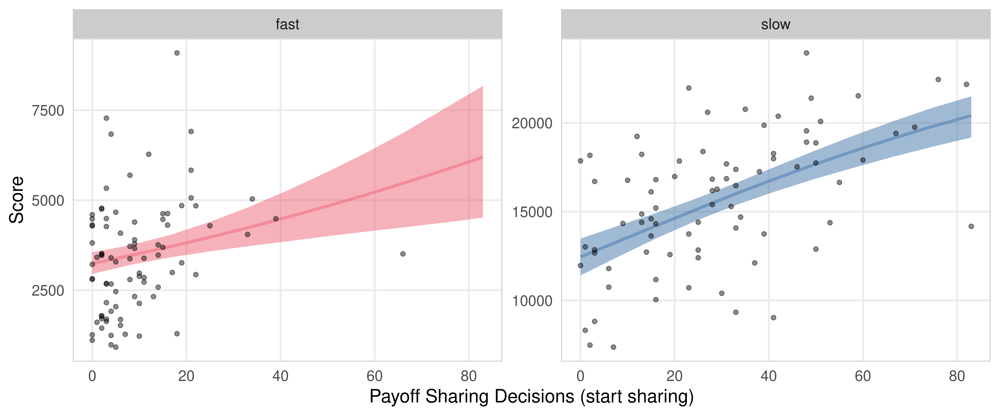
Model fitting (Group)
m.PayoffSharing.SwitchCounts.Group.data <- m.PayoffSharing.SwitchCounts.data %>%
group_by(Group) %>%
summarise(
Score_0_1 = mean(Score_0_1),
TrackingTime_0_1 = mean(TrackingTime_0_1),
PCR_0_1 = mean(PCR_0_1),
sum_n_switch_0_to_1 = sum(n_switch_0_to_1),
ResourceSpeed = unique(ResourceSpeed)
) %>% mutate(c_sum_n_switch_0_to_1 = sum_n_switch_0_to_1 / max(sum_n_switch_0_to_1))
m.PayoffSharing.SwitchCounts.Score.Group.formula <- brmsformula(
Score_0_1 ~ ResourceSpeed * c_sum_n_switch_0_to_1,
phi ~ ResourceSpeed,
family = Beta()
)
m.PayoffSharing.SwitchCounts.Score.Group.priors <-
prior(normal(0, 0.5), class = b) +
prior(normal(0, 1), class = Intercept) +
prior(gamma(4, 0.1), class = Intercept, dpar = phi, lb = 0)m.PayoffSharing.SwitchCounts.Score.Group.fit <- brm(
formula = m.PayoffSharing.SwitchCounts.Score.Group.formula,
data = m.PayoffSharing.SwitchCounts.Group.data,
prior = m.PayoffSharing.SwitchCounts.Score.Group.priors,
chains = 4,
cores = 4,
seed = 42,
iter = 2000,
file = paste0(fits_path, 'pyoff_sharing_count_score_group.rds'),
backend = "cmdstanr",
threads = threading(100),
save_pars = save_pars(all = TRUE)
)Model diagnostics
## Family: beta
## Links: mu = logit; phi = log
## Formula: Score_0_1 ~ ResourceSpeed * c_sum_n_switch_0_to_1
## phi ~ ResourceSpeed
## Data: m.PayoffSharing.SwitchCounts.Group.data (Number of observations: 36)
## Draws: 4 chains, each with iter = 2000; warmup = 1000; thin = 1;
## total post-warmup draws = 4000
##
## Regression Coefficients:
## Estimate Est.Error l-95% CI u-95% CI Rhat Bulk_ESS Tail_ESS
## Intercept -1.93 0.11 -2.14 -1.72 1.00 3284 2715
## phi_Intercept 4.09 0.34 3.35 4.70 1.00 3156 2633
## ResourceSpeedslow 1.47 0.19 1.10 1.86 1.00 2775 2713
## c_sum_n_switch_0_to_1 0.81 0.35 0.13 1.48 1.00 3040 2798
## ResourceSpeedslow:c_sum_n_switch_0_to_1 1.00 0.37 0.26 1.71 1.00 2648 2741
## phi_ResourceSpeedslow -0.68 0.50 -1.66 0.32 1.00 2935 2746
##
## Draws were sampled using sample(hmc). For each parameter, Bulk_ESS
## and Tail_ESS are effective sample size measures, and Rhat is the potential
## scale reduction factor on split chains (at convergence, Rhat = 1).Figure
fig_payoff_sharing_switch_count_score_group <- m.PayoffSharing.SwitchCounts.Group.data %>%
select(ResourceSpeed, c_sum_n_switch_0_to_1) %>%
group_by() %>%
data_grid(ResourceSpeed, c_sum_n_switch_0_to_1=seq(0, 1, 0.1)) %>%
tidybayes::add_epred_draws(m.PayoffSharing.SwitchCounts.Score.Group.fit,
allow_new_levels = TRUE,
re_formula = NA) %>%
ggplot(aes(x = c_sum_n_switch_0_to_1 * max(m.PayoffSharing.SwitchCounts.Group.data$sum_n_switch_0_to_1),
y = .epred * empirical_max_score,
color = ResourceSpeed,
fill = ResourceSpeed)) +
stat_lineribbon(aes(group = paste(group, ...width..)), .width = c(.9), alpha = 0.5) +
scale_color_manual(breaks = c('fast', 'slow'),
aesthetics = c("colour", "fill"),
values = get_colors("Qual2", num.colors = 2, reverse = TRUE, gradient = FALSE),
guide = guide_legend(
title = "Resource",
)
) +
geom_point(
data = m.PayoffSharing.SwitchCounts.Group.data,
aes(x = sum_n_switch_0_to_1, y = Score_0_1 * empirical_max_score), # , color = ResourceSpeed
color = 'black',
inherit.aes = FALSE,
alpha = 0.45,
size = 1.6
) +
theme_clean() +
panel_border() +
facet_wrap(vars(ResourceSpeed), scales = "free") +
theme(
legend.position = "none", # "bottom",
) + labs(x = "Payoff Sharing Decisions (start sharing)", y = "Average Score (Group)", fill = "Resource", color = "Resource")
fig_payoff_sharing_switch_count_score_group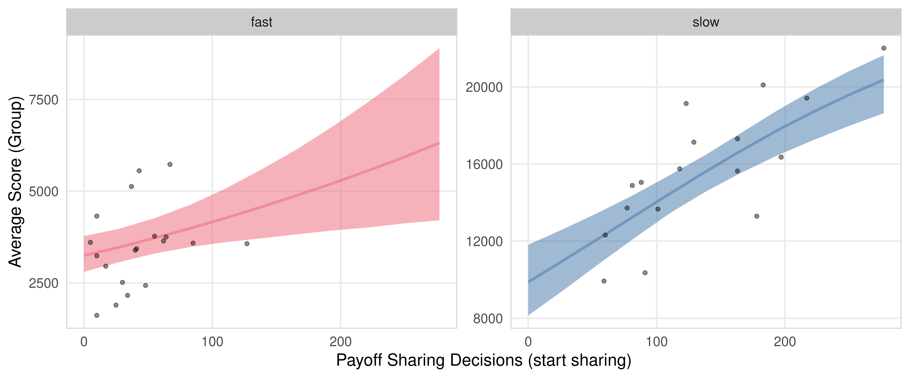
Total Sharing
total_sharing_time <- m.PayoffSharing.data %>%
arrange(Participant, Time) %>%
group_by(Participant) %>%
summarise(
total_sharing = sum(IsSignaling == 1, na.rm = TRUE),
.groups = "drop"
)
hist(total_sharing_time$total_sharing)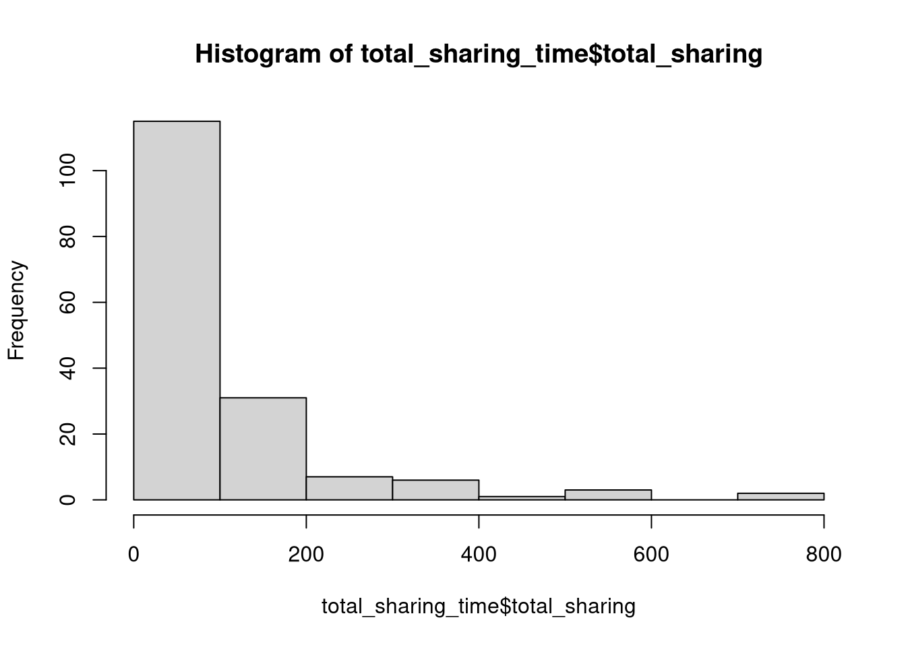
m.PayoffSharing.TotalSharing.data <- subj_data %>%
filter(SignalingType == 'VP') %>%
select(Participant, Group, ResourceSpeed, SignalingType, PCR, Score, TrackingTime) %>%
left_join(total_sharing_time, by = "Participant") %>%
mutate(PCR_0_1 = PCR / 40,
Score_0_1 = Score / empirical_max_score,
TrackingTime_0_1 = TrackingTime / 15.01,
c_total_sharing = total_sharing / (15 * 60) + 0.01) m.PayoffSharing.TotalSharing.data %>%
summarise(
n = n(),
max_time = max(total_sharing) / 60,
max_time = max(total_sharing) / (15 * 60)
)Total Sharing Model
m.PayoffSharing.TotalSharing.formula <- brmsformula(
c_total_sharing ~ ResourceSpeed + (1 | Participant),
family = Beta()
)
m.PayoffSharing.TotalSharing.priors <-
prior(normal(0, 0.5), class = b) +
prior(normal(0, 1), class = Intercept)Model fitting
m.PayoffSharing.TotalSharing.fit <- brm(
formula = m.PayoffSharing.TotalSharing.formula,
data = m.PayoffSharing.TotalSharing.data,
prior = m.PayoffSharing.TotalSharing.priors,
chains = 4,
cores = 4,
seed = 42,
iter = 2000,
file = paste0(fits_path, 'payoff_sharing_total_time_1.rds'),
backend = "cmdstanr",
threads = threading(100),
control = list(adapt_delta = 0.95),
save_pars = save_pars(all = TRUE)
)Model diagnostics
## Family: beta
## Links: mu = logit; phi = identity
## Formula: c_total_sharing ~ ResourceSpeed + (1 | Participant)
## Data: m.PayoffSharing.TotalSharing.data (Number of observations: 165)
## Draws: 4 chains, each with iter = 2000; warmup = 1000; thin = 1;
## total post-warmup draws = 4000
##
## Multilevel Hyperparameters:
## ~Participant (Number of levels: 165)
## Estimate Est.Error l-95% CI u-95% CI Rhat Bulk_ESS Tail_ESS
## sd(Intercept) 0.10 0.08 0.00 0.31 1.00 1473 1724
##
## Regression Coefficients:
## Estimate Est.Error l-95% CI u-95% CI Rhat Bulk_ESS Tail_ESS
## Intercept -2.11 0.11 -2.34 -1.89 1.00 3921 2854
## ResourceSpeedslow 0.36 0.14 0.10 0.63 1.00 5701 3097
##
## Further Distributional Parameters:
## Estimate Est.Error l-95% CI u-95% CI Rhat Bulk_ESS Tail_ESS
## phi 6.45 0.79 5.03 8.09 1.00 2985 1973
##
## Draws were sampled using sample(hmc). For each parameter, Bulk_ESS
## and Tail_ESS are effective sample size measures, and Rhat is the potential
## scale reduction factor on split chains (at convergence, Rhat = 1).Condition draws
m.PayoffSharing.TotalSharing.fit %>%
emmeans(~ ResourceSpeed, epred = TRUE, type = "response", re_formula = NA) %>%
gather_emmeans_draws() %>%
mutate(.value = .value * 15) %>% # convert to minutes
ggdist::mean_hdci(.width = 0.9) %>%
knitr::kable("html", digits = 2) %>% kable_classic(full_width = T, position = "center", )| ResourceSpeed | .value | .lower | .upper | .width | .point | .interval |
|---|---|---|---|---|---|---|
| fast | 1.63 | 1.35 | 1.89 | 0.9 | mean | hdci |
| slow | 2.23 | 1.91 | 2.58 | 0.9 | mean | hdci |
Total Sharing vs Score Model
m.PayoffSharing.TotalSharing.data %>%
ggplot(aes(x=c_total_sharing, y=Score, color=ResourceSpeed)) +
facet_wrap(vars(ResourceSpeed), scales="free") +
geom_point() +
geom_smooth(method="lm")m.PayoffSharing.TotalSharing.data %>%
group_by(Group) %>%
summarise(
Score_0_1 = mean(Score),
TrackingTime_0_1 = mean(TrackingTime_0_1),
PCR_0_1 = mean(PCR_0_1),
sum_total_sharing = sum(total_sharing),
ResourceSpeed = unique(ResourceSpeed)
) %>%
mutate(sum_total_sharing = sum_total_sharing / max(sum_total_sharing)) %>%
ggplot(aes(x=sum_total_sharing, y=Score_0_1, color=ResourceSpeed)) +
facet_wrap(vars(ResourceSpeed), scales="free") +
geom_point() +
geom_smooth(method="lm")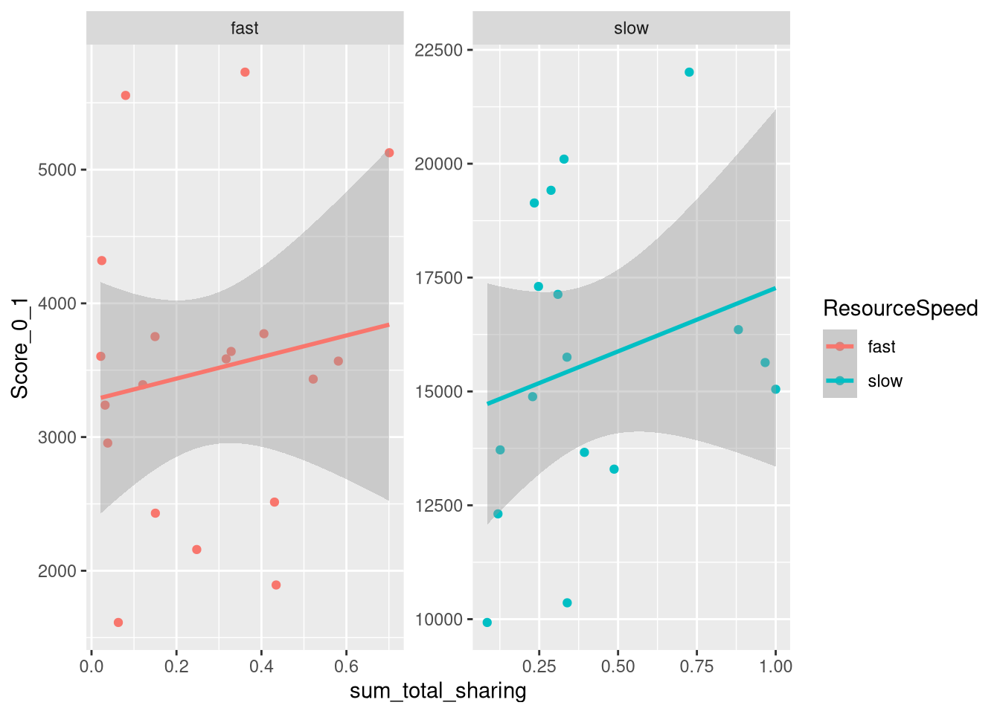
Model fitting (Participant)
m.PayoffSharing.TotalSharing.Score.formula <- brmsformula(
Score_0_1 ~ ResourceSpeed * c_total_sharing,
phi ~ ResourceSpeed,
family = Beta()
)
m.PayoffSharing.TotalSharing.Score.priors <-
prior(normal(0, 0.5), class = b) +
prior(normal(0, 1), class = Intercept) +
prior(gamma(4, 0.1), class = Intercept, dpar = phi, lb = 0)m.PayoffSharing.TotalSharing.Score.fit <- brm(
formula = m.PayoffSharing.TotalSharing.Score.formula,
data = m.PayoffSharing.TotalSharing.data,
prior = m.PayoffSharing.TotalSharing.Score.priors,
chains = 4,
cores = 4,
seed = 42,
iter = 2000,
file = paste0(fits_path, 'payoff_sharing_total_time_score.rds'),
backend = "cmdstanr",
threads = threading(100),
save_pars = save_pars(all = TRUE)
)Model diagnostics
## Family: beta
## Links: mu = logit; phi = log
## Formula: Score_0_1 ~ ResourceSpeed * c_total_sharing
## phi ~ ResourceSpeed
## Data: m.PayoffSharing.TotalSharing.data (Number of observations: 165)
## Draws: 4 chains, each with iter = 2000; warmup = 1000; thin = 1;
## total post-warmup draws = 4000
##
## Regression Coefficients:
## Estimate Est.Error l-95% CI u-95% CI Rhat Bulk_ESS Tail_ESS
## Intercept -1.85 0.06 -1.97 -1.71 1.00 4934 2748
## phi_Intercept 3.38 0.16 3.04 3.68 1.00 5764 3068
## ResourceSpeedslow 2.20 0.10 2.00 2.40 1.00 4509 3139
## c_total_sharing 0.14 0.27 -0.42 0.69 1.00 5446 3019
## ResourceSpeedslow:c_total_sharing 0.30 0.38 -0.44 1.06 1.00 4275 3171
## phi_ResourceSpeedslow -1.09 0.22 -1.51 -0.66 1.00 5572 3031
##
## Draws were sampled using sample(hmc). For each parameter, Bulk_ESS
## and Tail_ESS are effective sample size measures, and Rhat is the potential
## scale reduction factor on split chains (at convergence, Rhat = 1).Model fitting (Group)
m.PayoffSharing.TotalSharing.Group.data <- m.PayoffSharing.TotalSharing.data %>%
group_by(Group) %>%
summarise(
Score_0_1 = mean(Score_0_1),
TrackingTime_0_1 = mean(TrackingTime_0_1),
PCR_0_1 = mean(PCR_0_1),
sum_total_sharing = sum(total_sharing),
ResourceSpeed = unique(ResourceSpeed)
) %>% mutate(c_sum_total_sharing = sum_total_sharing / max(sum_total_sharing))
m.PayoffSharing.TotalSharing.Score.Group.formula <- brmsformula(
Score_0_1 ~ ResourceSpeed * c_sum_total_sharing,
phi ~ ResourceSpeed,
family = Beta()
)
m.PayoffSharing.TotalSharing.Score.Group.priors <-
prior(normal(0, 0.5), class = b) +
prior(normal(0, 1), class = Intercept) +
prior(gamma(4, 0.1), class = Intercept, dpar = phi, lb = 0)m.PayoffSharing.TotalSharing.Score.Group.fit <- brm(
formula = m.PayoffSharing.TotalSharing.Score.Group.formula,
data = m.PayoffSharing.TotalSharing.Group.data,
prior = m.PayoffSharing.TotalSharing.Score.Group.priors,
chains = 4,
cores = 4,
seed = 42,
iter = 2000,
file = paste0(fits_path, 'payoff_sharing_total_time_score_group.rds'),
backend = "cmdstanr",
threads = threading(100),
save_pars = save_pars(all = TRUE)
)Model diagnostics
## Family: beta
## Links: mu = logit; phi = log
## Formula: Score_0_1 ~ ResourceSpeed * c_sum_total_sharing
## phi ~ ResourceSpeed
## Data: m.PayoffSharing.TotalSharing.Group.data (Number of observations: 36)
## Draws: 4 chains, each with iter = 2000; warmup = 1000; thin = 1;
## total post-warmup draws = 4000
##
## Regression Coefficients:
## Estimate Est.Error l-95% CI u-95% CI Rhat Bulk_ESS Tail_ESS
## Intercept -1.83 0.12 -2.06 -1.58 1.00 3636 3390
## phi_Intercept 3.98 0.36 3.19 4.61 1.00 3828 2614
## ResourceSpeedslow 1.86 0.21 1.42 2.27 1.00 2791 2589
## c_sum_total_sharing 0.17 0.30 -0.41 0.76 1.00 3666 2802
## ResourceSpeedslow:c_sum_total_sharing 0.53 0.36 -0.19 1.23 1.00 2850 2566
## phi_ResourceSpeedslow -1.47 0.51 -2.47 -0.45 1.00 3148 2794
##
## Draws were sampled using sample(hmc). For each parameter, Bulk_ESS
## and Tail_ESS are effective sample size measures, and Rhat is the potential
## scale reduction factor on split chains (at convergence, Rhat = 1).Sharing Probability: Resource, Distance
m.PayoffSharing.2.data <- m.PayoffSharing.data %>%
filter(State == 'Tracking', c_OwnDistFromResource <= 1) %>%
mutate(OwnDistFromResourceInt = round(OwnDistFromResource))
m.PayoffSharing.2.formula <- brmsformula(
IsSignaling ~ ResourceSpeed * c_OwnDistFromResource + (1 | Participant),
family = bernoulli(link = "logit")
)m.PayoffSharing.2.priors <-
prior(normal(0, 0.5), class = b) +
prior(normal(0, 0.1), class = 'sd') +
prior(normal(0, 1), class = Intercept)m.PayoffSharing.2.data %>%
ggplot(aes(x = c_OwnDistFromResource, y=IsSignaling, color=ResourceSpeed)) +
geom_smooth()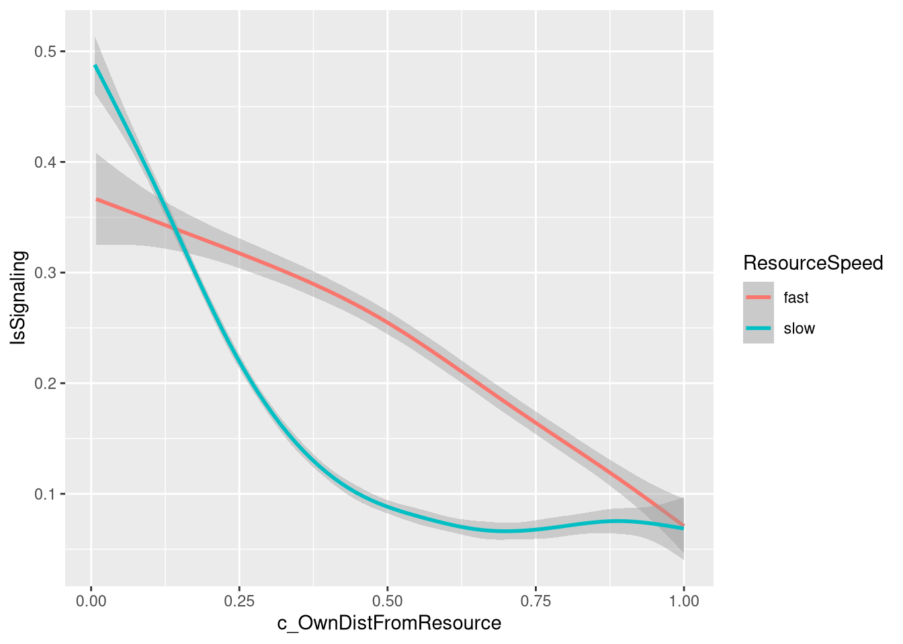
Model fitting
m.PayoffSharing.2.fit <- brm(
formula = m.PayoffSharing.2.formula,
data = m.PayoffSharing.2.data,
prior = m.PayoffSharing.2.priors,
chains = 4,
cores = 4,
seed = 42,
iter = 2000,
file = paste0(fits_path, 'payoff_sharing_probability_distance_1.rds'),
backend = "cmdstanr",
threads = threading(100),
control = list(adapt_delta = 0.95),
save_pars = save_pars(all = TRUE)
)Model diagnostics
## Family: bernoulli
## Links: mu = logit
## Formula: IsSignaling ~ ResourceSpeed * c_OwnDistFromResource + (1 | Participant)
## Data: m.PayoffSharing.2.data (Number of observations: 73938)
## Draws: 4 chains, each with iter = 2000; warmup = 1000; thin = 1;
## total post-warmup draws = 4000
##
## Multilevel Hyperparameters:
## ~Participant (Number of levels: 165)
## Estimate Est.Error l-95% CI u-95% CI Rhat Bulk_ESS Tail_ESS
## sd(Intercept) 1.33 0.04 1.24 1.41 1.00 523 1266
##
## Regression Coefficients:
## Estimate Est.Error l-95% CI u-95% CI Rhat Bulk_ESS Tail_ESS
## Intercept -0.44 0.15 -0.74 -0.15 1.01 247 556
## ResourceSpeedslow -0.05 0.19 -0.44 0.31 1.02 146 377
## c_OwnDistFromResource -3.08 0.11 -3.29 -2.88 1.00 2142 3021
## ResourceSpeedslow:c_OwnDistFromResource -1.60 0.13 -1.86 -1.34 1.00 2233 2763
##
## Draws were sampled using sample(hmc). For each parameter, Bulk_ESS
## and Tail_ESS are effective sample size measures, and Rhat is the potential
## scale reduction factor on split chains (at convergence, Rhat = 1).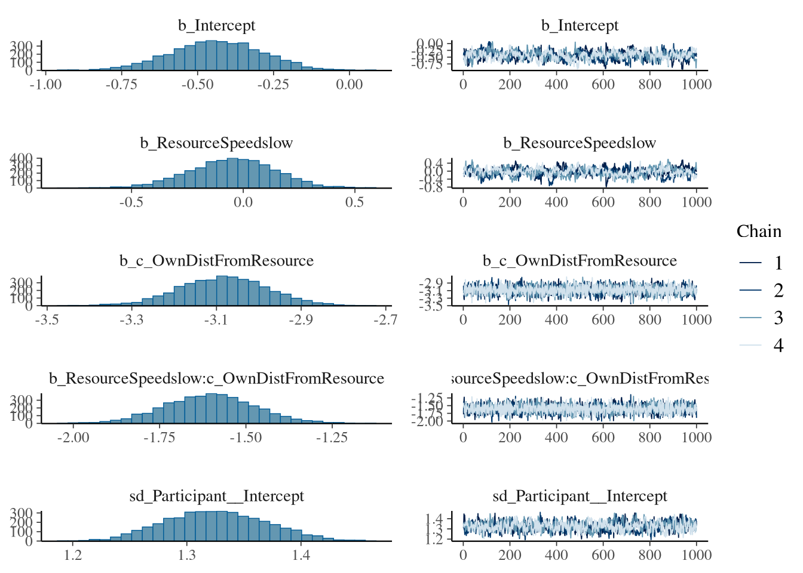

Figure
fig_payoff_sharing_resource_distance <- m.PayoffSharing.2.data %>%
select(Participant, State, ResourceSpeed, c_OwnDistFromResource, IsSignaling) %>%
group_by() %>%
data_grid(ResourceSpeed, State="Tracking", c_OwnDistFromResource=seq(0, 1, 0.05)) %>%
tidybayes::add_epred_draws(m.PayoffSharing.2.fit,
allow_new_levels = TRUE,
re_formula = NA) %>%
ggplot(aes(x = c_OwnDistFromResource * 40,
y = .epred,
color = ResourceSpeed,
fill = ResourceSpeed)) +
stat_lineribbon(aes(group = paste(group, ...width..)), .width = c(.9), alpha = 0.5) +
scale_color_manual(breaks = c('fast', 'slow'),
aesthetics = c("colour", "fill"),
values = get_colors("Qual2", num.colors = 2, reverse = TRUE, gradient = FALSE),
guide = guide_legend(
title = "Resource",
)
) +
theme_clean() +
panel_border() +
facet_wrap(vars(State)) +
theme(
legend.position = "none", # "bottom",
) +
labs(x = "Distance from the resource center", y = "Payoff Sharing Probability", fill = "Resource", color = "Resource")
fig_payoff_sharing_resource_distance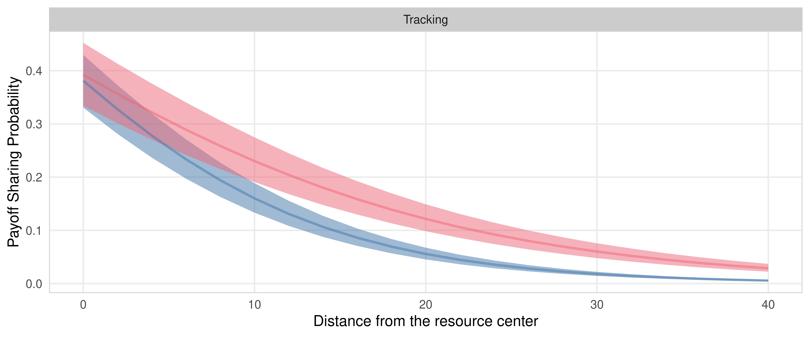